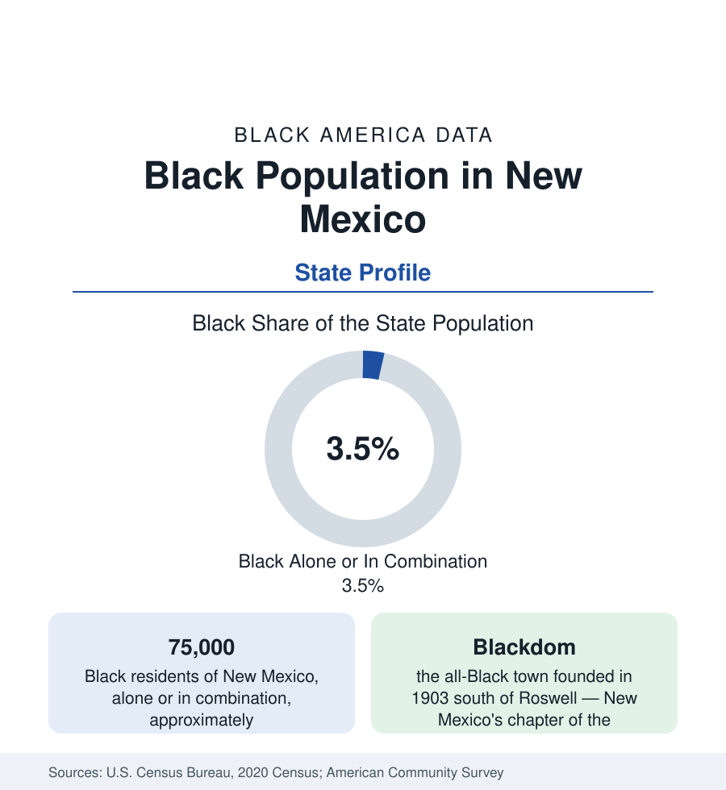

Black Census
Black Population in New Mexico: Blackdom and the Buffalo Soldiers' Ground
About 75,000 Black New Mexicans — one in twenty-eight residents — between Albuquerque and a frontier history of Black towns and regiments. The census profile.

New Mexico holds about 75,000 Black residents — Black alone or in combination — roughly one in twenty-eight of its people, with Black alone at about 44,000, or 2.1 percent. The population is small in one of the nation's most distinctly composed states (majority Hispanic and Native in its overall data), and its history is the frontier West's: Buffalo Soldier regiments on the border forts, an all-Black town on the Pecos plains, and a modern community centered in Albuquerque and the military cities of the south.
The Frontier Record: Soldiers and Settlers
Black New Mexico begins in uniform: the Black regular regiments — the 9th and 10th Cavalry and the Black infantry regiments — garrisoned the territory's forts (Stanton, Bayard, Union, Selden) through the Apache campaigns and the border era, and their veterans seeded the territory's first Black communities in the fort towns and in Las Cruces (whose Black district dates to this era) and Albuquerque's Barelas and South Broadway neighborhoods. The settlers' chapter arrived with the homestead era: Blackdom, founded in 1903 in Chaves County south of Roswell by Frank Boyer and Ella Louise Boyer, grew into New Mexico's only all-Black incorporated town — a farming community of several hundred at its peak with its own school, church, and oil-era hopes — before the aquifer's limits and the Depression dispersed it; its site is marked and its story central to the state's Black heritage record. Smaller Black farming colonies and the railroad towns of Raton, Tucumcari, and Clovis complete the frontier layer.
The Modern Map: Albuquerque and the Military South
Albuquerque holds roughly half of Black New Mexico: the city is about 3 to 4 percent Black (some 18,000 to 20,000 residents), centered historically in the South Broadway and Martineztown districts and now spread through the Northeast Heights and the west side, employed by Kirtland Air Force Base, the national laboratories' service economy, the university, and the state government. The military south holds the second layer: Alamogordo (Holloman AFB) and Clovis (Cannon AFB) record Black shares in the high single digits on their bases' workforces; Las Cruces, the second city, is roughly 3 to 4 percent Black with New Mexico State's community; Roswell records a small share with the Blackdom legacy in its county; Santa Fe's Black population is small and professional in composition. The tribal and Hispanic majorities of the state's northern counties leave Black shares under 1 percent nearly everywhere else.
Composition and Indicators
The composition is disproportionately military and federal in origin — the veteran share of Black New Mexico's adults runs well above national figures in the survey data — layered over the homestead descendants and a growing African immigrant community in Albuquerque. Indicators present the small-population caution with a federal-economy cushion: incomes in the survey data run near the national Black figures (the laboratories and bases paying federal-scale wages), attainment lifted by the university and lab orbit, homeownership comparatively strong in the military cities. Health outcomes track the state's overall position in the public health tables. The state has no HBCU; the University of New Mexico's Africana studies tradition and the community's churches and associations carry the institutional layer.
Change and the Estimates
The estimates show slow growth tracking the state's — Albuquerque and Las Cruces gaining, the plains towns' remnants shrinking — with the Black share holding near its modern level. The border-and-bases economy is the stability: New Mexico's Black population is the West's most federally anchored in percentage terms, and its data move with appropriations more than with markets.
Reading the New Mexico Numbers
The heritage layer is formally recognized: the state's Black history sites — the Blackdom townsite marker, the Buffalo Soldier memorials at the fort cemeteries, Albuquerque's Fairview Cemetery Black section, and the state museum's African American programs — anchor a heritage trail proportionate to the frontier record, and the state's centennial-era scholarship has made New Mexico's Black frontier one of the better-documented small populations in the western literature.
New Mexico's 75,000 Black residents are the frontier profile complete: regiments, a Black town, and bases — a population whose history is written in the state's most distinctive chapters and whose present is Albuquerque's modest share. In a state defined demographically by its Hispanic and Native majorities, Black New Mexico is the third strand, oldest in uniform and smallest in number.
More in Black Census
The Black Population of the United States: Size, Definitions, and Distribution
The Black population of the United States totals 52.8 million — 15.4 percent of the nation. How the Census Bureau defines and counts the population, and where it lives.
Black Median Household Income in the United States
Black median household income stands at $56,490 in the Census Bureau's annual income report — how the figure is measured, how it compares, and what drives it.
The Black Poverty Rate: Levels, Children, and the Long Trend
The official Black poverty rate is 17.1 percent — against 11.1 percent nationally and 7.7 percent for non-Hispanic White Americans. How poverty is measured and what the data show.
Source: U.S. Census Bureau, 2020 Census; American Community Survey; Population Estimates Program.